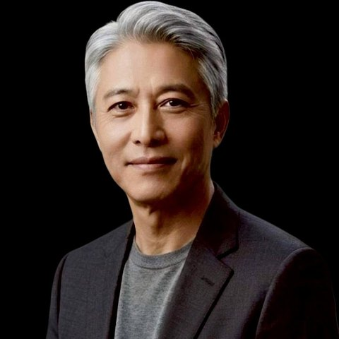
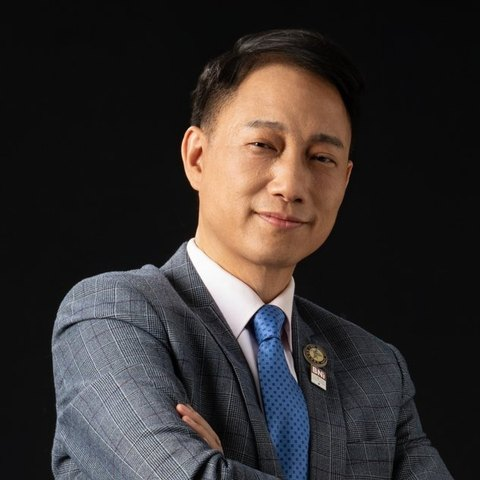
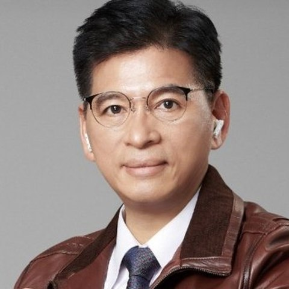
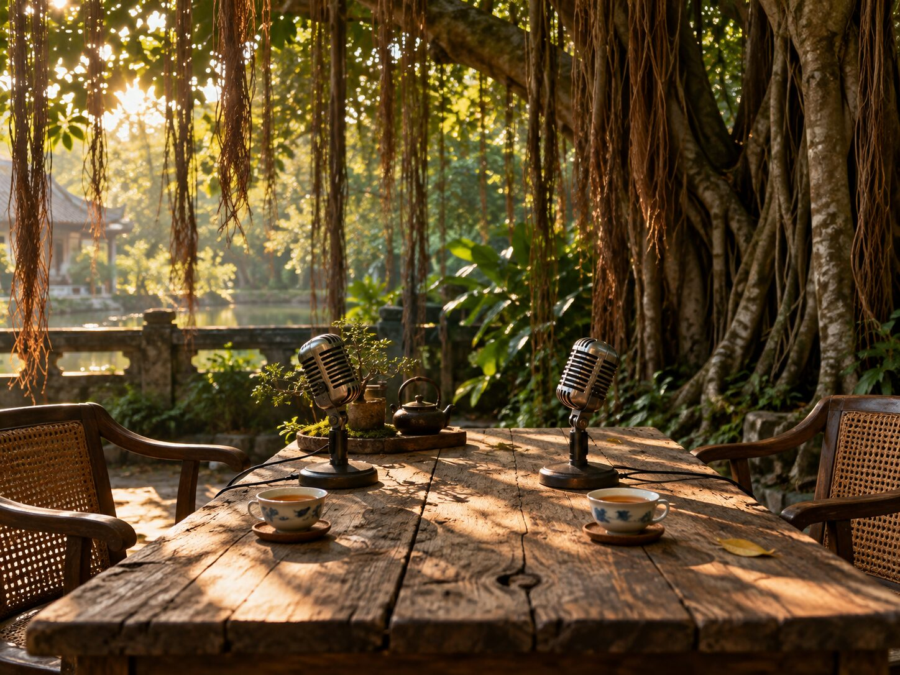
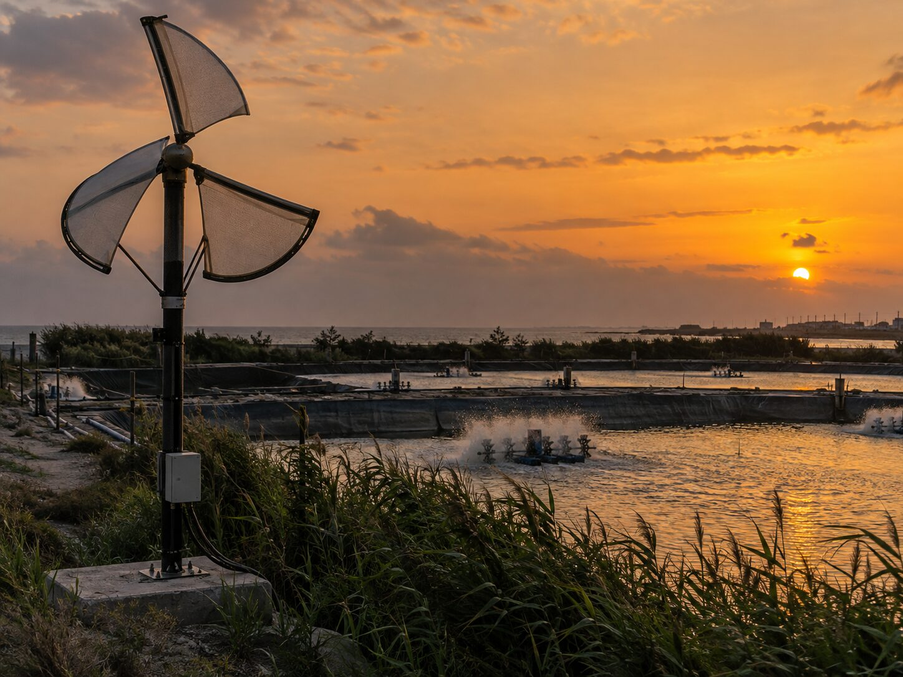
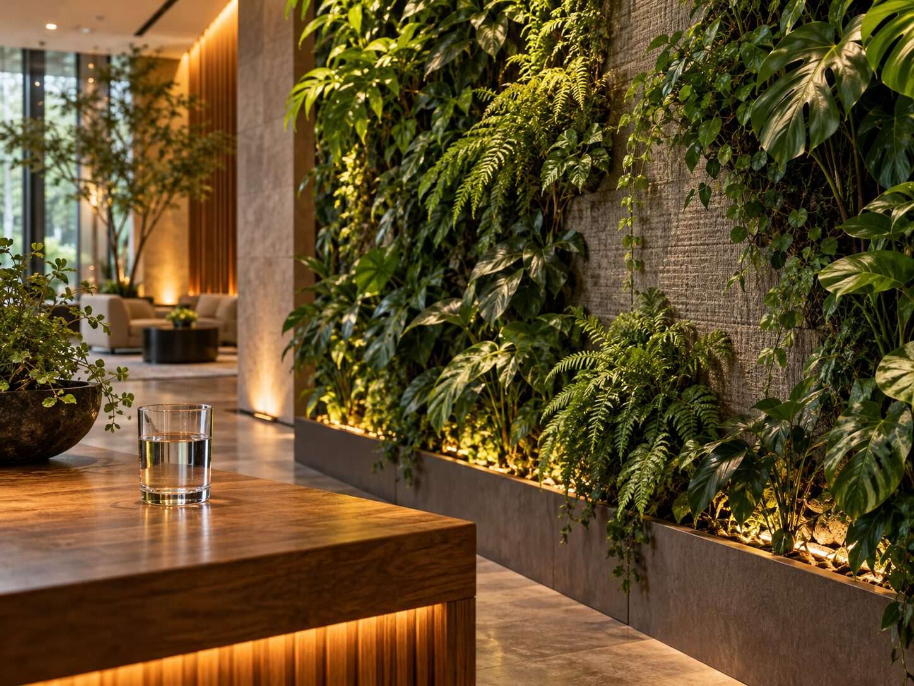

邱裕榮
才榮數位 總經理｜AI 傳道學院 創辦人｜AI 媒體聯盟 總編輯
從《工商時報》大陸新聞中心、《管理雜誌》，到東森聯播網《BossClub 老闆俱樂部》主持台。他坐在無數董事長對面，慢慢看見：真正影響企業與社會的，不只是策略與資本，而是價值觀、呼召與生命的抉擇。
- 20+ 年財經與管理媒體資歷
- 白皮書《當 AI 遇上農業》作者

邱裕榮與吳大樹，在榕樹下談古論今聊家常。我們專訪企業家與發明家，把一個人的初心說清楚——再把聽見的人，請到同一張桌子旁。
一個名字的由來
念出來，是「榕樹下」。台灣每個村子口都有這麼一棵樹：老人泡茶、孩子乘涼，大大小小的事，都在樹蔭底下被說開。我們想做的節目，就是那樣的地方。
吳錦昌 順發電腦董事長
本節目命名人。這個名字，是他給的祝福。
欣欣向榮。二十多年財經記者與主持人，聽過上千小時董事長的故事。
十年樹木。大樹教練，長年陪伴創業者與團隊，一圈一圈長出信任。
不站在台上，而是坐下來。不分輩分與產業，一起談古論今聊家常。
樹下的人
一位把麥克風對準企業家二十年，一位把人與人接成團隊；而這棵樹的名字，來自一位做了十七年公益的董事長。

才榮數位 總經理｜AI 傳道學院 創辦人｜AI 媒體聯盟 總編輯
從《工商時報》大陸新聞中心、《管理雜誌》，到東森聯播網《BossClub 老闆俱樂部》主持台。他坐在無數董事長對面，慢慢看見：真正影響企業與社會的，不只是策略與資本，而是價值觀、呼召與生命的抉擇。

大樹教練｜海餅乾俱樂部 創辦人｜大樹教育顧問
相信「專注本業，才有高溢價；不懂的，交給隊友裡的專家」。他每週把客戶、人才與伯樂請進同一個房間，也發起 AI 百人導師計劃，帶更多人用正向的方式走進 AI 的世界。

順發電腦 創辦人 ‧ 董事長
長年倡導「用消費改變世界」。一份單純的初心，走成一條十七年的公益之路；Run for Future 公益路跑自 2019 年起，2027 年邁入第五屆。榮樹下第一集，就從他的故事開始。
我們相信
商業即公益，利他即商業。
一家企業究竟相信什麼，是唯一無法外包的事。榮樹下不做單向的贊助與乞求，而是讓每一次合作都有對價、有回報，也有被看見的意義。
「一家公司可以做公益，100 家公司可以改變世界。」
—— 順發電腦董事長 吳錦昌

擺脫單向贊助，設計雙贏的商業對價。好事不再停在原地，而是被串起來、被放大。
從一次次見面、引薦，到可查核的資料與帳本——信任不靠口號，而是一圈一圈長出來。
把企業的本業，接上社會與土地真正的痛點。做對的事，商業的成長自然跟上。
一份單純的初心，一場長達 17 年的公益之路，一場超過 12,000 人的路跑，一場超過 100 家參與的公益活動。
重點節錄版 12:152026.10.09不剪輯的一小時十四分鐘。想聽完整的來龍去脈，從這一版開始。
實況轉播版 1:14:422026.10.09專注氫同位素與細胞能量代謝研究。與漢諾威研發團隊把石墨烯篩分技術，轉化為可量產的常溫降氘製程，並在高雄旗山建立示範基地。
重點節錄版 17:482026.10.09讓一面牆，長出一座永續的生意。從一塊會呼吸的布，到城市裡持續生長的風景。
重點節錄版 21:142026.10.11別人說風太小、浪太亂、水庫太髒。他說：那些都是還沒接上的電。十多年來，他把風、河水、海浪、洋流，甚至工廠排出去的廢風，一項一項畫成專利。
重點節錄版最新一集 19:162026.10.12一棵樹，四條氣根
榕樹的氣根落地，就成了新的樹幹。每一場專訪背後，都長出一條可以參與的計畫——媒體、綠能、生命農業與公益路跑，彼此相連。
深度專訪把企業家精神轉成數位信任資產；再由導師群與團隊夥伴，接住每一位想再往前一步的人。

台南歸仁的發明人黃國彰，把風、河水、海浪、洋流，甚至工廠排出的廢風，一項一項畫成專利——小型、分散、在地。

一塊會呼吸的布、一罐發酵母液、一滴降了氘的水。把被叫做夕陽的農業，變成能驗證、能傳承的生命科技資產。
第五屆順發 × 港都公益路跑。聯合公益、運動幸福——不是各自做好事，而是一起把好事做大。
各項數據引自上列專題頁所載之公開資料或計畫書內容；計畫中的目標與規劃，不等同已完成之實績。
榮樹下 Podcast × Run for Future
我們將逐一專訪 Run for Future 的 100 家共同發起單位，由企業最高領導者親口說出：你的企業，為什麼而跑。每一片葉子，都是一個被記錄的名字。